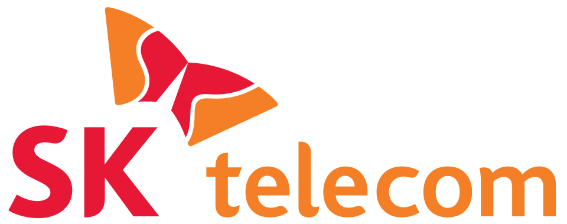

홈 > 브랜드 매거진 > SK텔레콤
SK텔레콤
SK텔레콤(SK Telecom)은 1984년 설립된 대한민국 최대의 이동통신 사업자로 SK그룹 계열사다.
산업 분야 기술·전자 · 공개 등급 자료 기반 · 브랜드 평가 4.2 ★


한눈에 보는 브랜드
SK텔레콤(SK Telecom)은 1984년 한국이동통신서비스로 출발해 1997년 현 사명이 됐고 1994년 SK그룹이 최대주주로 참여하며 계열에 편입됐다. 2000년 세계 두 번째로 W-CDMA 기반 3G를 상용화하는 등 한국 이동통신 시장을 선도해왔다.
브랜드 관점
SK텔레콤 항목은 단순한 이름 목록이 아니라 기술·전자 시장 안에서 어떤 역할을 하는지 읽기 위한 기준점입니다. 제품·서비스 범위, 유통 방식, 시각 아이덴티티, 시장 포지션을 함께 비교하면 같은 산업의 다른 브랜드와 차이가 선명해집니다.
시작과 성장
1984년 설립된 한국 1위 이동통신사로, 현재 SK그룹 소속이다.
브랜드 아이덴티티
한국 이동통신 시장을 선도하는 SK그룹의 대표 통신 계열사다.
제품과 서비스
SK텔레콤의 제품과 서비스는 기술·전자 범주에서 해석됩니다. 이 섹션은 상품군, 서비스 방식, 판매 채널, 사용 장면을 분리해 추적하기 위한 기본 설명이며, 추가 자료가 확보되면 대표 제품과 가격대, 시장별 차이까지 확장할 수 있습니다.
현재 상태
타임라인
BI/CI 변천사
함께 읽을 브랜드
It
It's Electronics
기술·전자 · 자료 기반It's ElectronicsIt's Electronics는 네덜란드의 기술·전자 브랜드로, 제품, 아이덴티티, 유통, 시장 포지션을 함께 읽어야 하는 영역입니다.
Au
Austrian Airlines
기술·전자 · 편집 검수Austrian AirlinesAustrian Airlines는 1969년에 기록된 Airlines 계열의 브랜드 아이덴티티 사례입니다. Josef Oberauer가 아이덴티티 작업의 디자이너로...
BE
BEA
기술·전자 · 편집 검수BEABEA는 1967년에 기록된 Airlines 계열의 브랜드 아이덴티티 사례입니다. FHK Henrion가 아이덴티티 작업의 디자이너로 기록되어 있습니다. 공개 섹션...
 기술·전자 · 편집 검수Cazoo
기술·전자 · 편집 검수CazooCazoo는 2025년에 기록된 Digital Products & Services 계열의 브랜드 아이덴티티 사례입니다. Fold7Design가 아이덴티티 작업의 디자...
Cl
Club Pescine
기술·전자 · 편집 검수Club PescineClub Pescine는 2025년에 기록된 Retail 계열의 브랜드 아이덴티티 사례입니다. Caserne가 아이덴티티 작업의 디자이너로 기록되어 있습니다. 공개...
 기술·전자 · 편집 검수Cohere
기술·전자 · 편집 검수CohereCohere는 2023년에 기록된 Technology 계열의 브랜드 아이덴티티 사례입니다. Pentagram가 아이덴티티 작업의 디자이너로 기록되어 있습니다. 공개...
De
Delta
기술·전자 · 편집 검수DeltaDelta는 2000년에 기록된 Airlines 계열의 브랜드 아이덴티티 사례입니다. Landor가 아이덴티티 작업의 디자이너로 기록되어 있습니다. 공개 섹션 정보는...
Di
Ding
기술·전자 · 편집 검수DingDing는 2025년에 기록된 Digital Products & Services 계열의 브랜드 아이덴티티 사례입니다. Wildish & Co.가 아이덴티티 작업의 디...